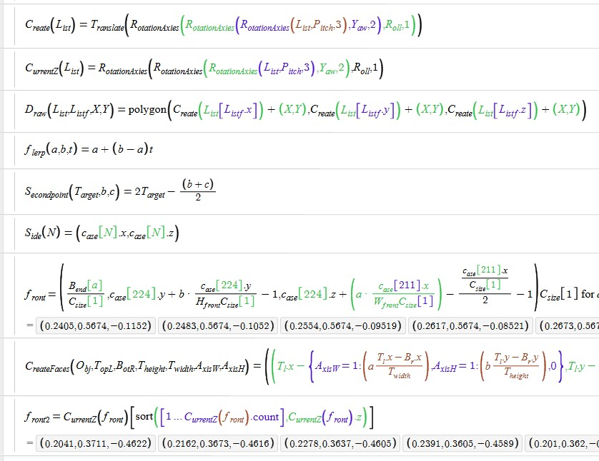
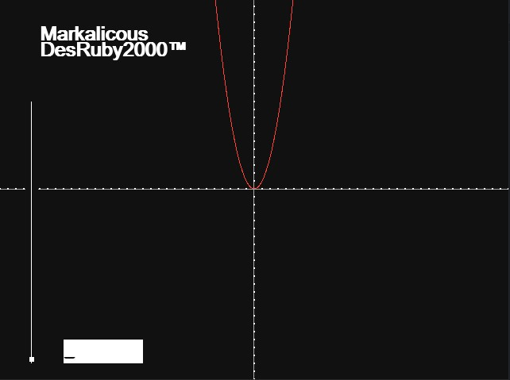
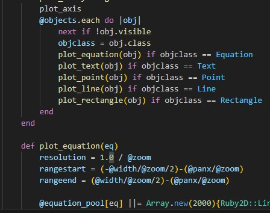
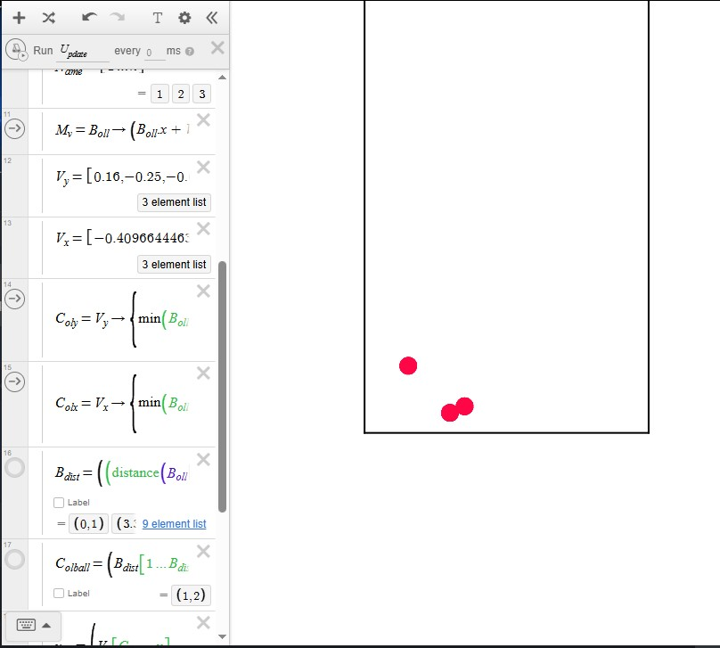

Mitt Pc Case projekt i Desmos är världens första hög definitions 3D renderare skriven i matematisk notation. Min 'kod' använder en lösning till tidigare restriktioner som ingen annan hittat, därför är jag stolt att kalla det mitt bästa projekt.


Mitt Grafritare projekt inuti ruby är en simplistisk grafritare på par med desmos i vissa punkter. Mitt mål med projektet är att lösa många problem och restriktioner som redan finns i desmos.


Yttligare ett projekt skriven i Desmos är min odeterministiska physics engine. Alltså en sann simulation som klarar av olika typer av interaktioner och kollisioner.